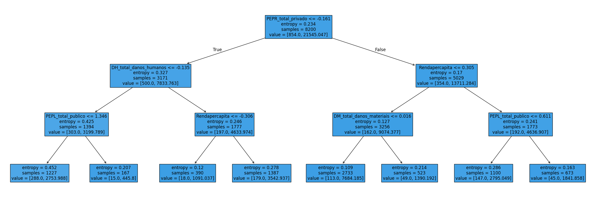

Variáveis agregadas (2010 a 2017)#
Bibliotecas e bases de dados#
Show code cell source
# Importar bibliotecas
import pandas as pd
from sklearn.model_selection import train_test_split
from sklearn.pipeline import Pipeline
from sklearn.tree import DecisionTreeClassifier
from sklearn.preprocessing import RobustScaler
from sklearn.metrics import recall_score, classification_report, make_scorer
from skopt import BayesSearchCV
import numpy as np
import warnings
import matplotlib.pyplot as plt
from sklearn.tree import plot_tree
from treeinterpreter import treeinterpreter as ti
from imblearn.over_sampling import SMOTE
from sklearn.feature_selection import SelectFromModel
#Estilizar conteúdo
warnings.filterwarnings('ignore')
pd.set_option('display.max_rows', None)
pd.set_option('display.max_columns', None)
def estilo_tabelas(df, max_altura='300px', casas_decimais=3):
return (
df.style.set_table_styles(
[
{'selector': 'thead th', 'props': [('font-size', '12px'), ('text-align', 'center'), ('border-bottom', '2px solid #007BFF')]},
{'selector': 'td', 'props': [('font-size', '10px'), ('text-align', 'center'), ('max-height', '40px'), ('white-space', 'nowrap'), ('text-overflow', 'ellipsis'), ('overflow', 'hidden'), ('max-width', '100px')]},
{'selector': 'tr:nth-child(odd)', 'props': [('background-color', '#ffffff')]},
{'selector': 'table', 'props': [('width', '90%'), ('margin-left', 'auto'), ('margin-right', 'auto'), ('border-collapse', 'collapse')]},
{'selector': 'td, th', 'props': [('border', '1px solid #666')]},
]
).set_properties(
**{'border-color': 'darkgray', 'border-style': 'solid', 'border-width': '1px'}
).set_table_attributes(
f'style="height:auto; overflow:auto; max-height:{max_altura}; display:block;"'
).format(
precision=casas_decimais
)
)
object_columns = ['Protocolo_S2iD', 'Nome_Municipio', 'Sigla_UF', 'regiao',
'Setores Censitários', 'Status', 'DH_Descricao', 'DM_Descricao',
'DA_Descricao', 'DA_Polui/cont da água', 'DA_Polui/cont do ar',
'DA_Polui/cont do solo', 'DA_Dimi/exauri hídrico',
"DA_Incêndi parques/APA's/APP's", 'PEPL_Descricao', 'PEPR_Descricao',
'Categoria', 'Grupo', 'Subgrupo', 'Tipo', 'Subtipo']
dtype = {col: 'object' for col in object_columns}
df_eventos_2010_1 = pd.read_csv(
"https://raw.githubusercontent.com/brunagmoura/PrevisorReconhecimento/refs/heads/main/df_eventos_2010_2017_modelo1.csv",
sep=';',
decimal=',')
# Remover linhas com dados ausentes
df_eventos_2010_1 = df_eventos_2010_1.dropna()
estilo_tabelas(df_eventos_2010_1.head(5))
# Remover registros em que todos os dados informados são 0
df_eventos_2010_1 = df_eventos_2010_1[
~((df_eventos_2010_1['DH_total_danos_humanos'] == 0) &
(df_eventos_2010_1['DM_total_danos_materiais'] == 0) &
(df_eventos_2010_1['PEPL_total_publico'] == 0) &
(df_eventos_2010_1['PEPR_total_privado'] == 0))
]
Modelo base#
Show code cell source
# Dividir dados em treino e teste
X_modelo1_2010_2017, y_modelo1_2010_2017 = df_eventos_2010_1.drop('Status', axis=1), df_eventos_2010_1['Status']
X_train_modelo1_2010_2017, X_test_modelo1_2010_2017, y_train_modelo1_2010_2017, y_test_modelo1_2010_2017 = train_test_split(
X_modelo1_2010_2017, y_modelo1_2010_2017, test_size=0.2, random_state=1)
# Árvore de decisão
clf_modelo1_2010_2017 = DecisionTreeClassifier(max_depth=4).fit(X_train_modelo1_2010_2017, y_train_modelo1_2010_2017)
# Fazer predições
y_pred_modelo1_2010_2017 = clf_modelo1_2010_2017.predict(X_test_modelo1_2010_2017)
Show code cell source
# Gerar e imprimir o classification report
classification_report_modelo1_2010_2017 = classification_report(
y_test_modelo1_2010_2017,
y_pred_modelo1_2010_2017,
digits=6,
target_names=['Não reconhecido', 'Reconhecido']
)
print("Classification report variáveis agregadas 2010-2017: \n", classification_report_modelo1_2010_2017)
Classification report variáveis agregadas 2010-2017:
precision recall f1-score support
Não reconhecido 0.714286 0.020747 0.040323 241
Reconhecido 0.884540 0.998895 0.938246 1810
accuracy 0.883959 2051
macro avg 0.799413 0.509821 0.489284 2051
weighted avg 0.864535 0.883959 0.832737 2051
Show code cell source
# Usar o treeinterpreter para explicar uma previsão
instance_modelo1_2010_2017 = X_test_modelo1_2010_2017.iloc[[0]].values # Explicando a primeira instância do conjunto de teste
prediction_modelo1_2010_2017, bias_modelo1_2010_2017, contributions_modelo1_2010_2017 = ti.predict(clf_modelo1_2010_2017, instance_modelo1_2010_2017)
# Criar DataFrame para mostrar a contribuição de cada característica
num_features_modelo1_2010_2017 = contributions_modelo1_2010_2017[0].shape[0]
feature_contributions_modelo1_2010_2017 = pd.DataFrame({
'Feature': X_modelo1_2010_2017.columns[:num_features_modelo1_2010_2017], # Ajustar nomes das features
'Contribution': contributions_modelo1_2010_2017[0][:, 1] # Seleciona a coluna da classe positiva (1)
})
feature_contributions_modelo1_2010_2017['Absolute Contribution'] = feature_contributions_modelo1_2010_2017['Contribution'].abs()
# Ordenar as contribuições
feature_contributions_modelo1_2010_2017 = feature_contributions_modelo1_2010_2017.sort_values(by='Absolute Contribution', ascending=False)
# Mostrar a previsão, o valor de bias e as contribuições
print(f"Previsão do modelo: {prediction_modelo1_2010_2017[0][1]:.4f}")
print(f"Valor de bias (média): {bias_modelo1_2010_2017[0][1]:.4f}")
print("\nContribuições das características:")
print(feature_contributions_modelo1_2010_2017)
Previsão do modelo: 0.8728
Valor de bias (média): 0.8959
Contribuições das características:
Feature Contribution Absolute Contribution
3 PEPR_total_privado -0.053533 0.053533
0 DH_total_danos_humanos 0.046818 0.046818
54 Rendapercapita -0.017810 0.017810
40 COBRADE_14132 0.001504 0.001504
2 PEPL_total_publico 0.000000 0.000000
4 regiao_Centro-oeste 0.000000 0.000000
31 COBRADE_13213 0.000000 0.000000
32 COBRADE_13214 0.000000 0.000000
33 COBRADE_13215 0.000000 0.000000
34 COBRADE_13310 0.000000 0.000000
35 COBRADE_13321 0.000000 0.000000
36 COBRADE_13322 0.000000 0.000000
37 COBRADE_14110 0.000000 0.000000
38 COBRADE_14120 0.000000 0.000000
39 COBRADE_14131 0.000000 0.000000
41 COBRADE_14140 0.000000 0.000000
42 COBRADE_15110 0.000000 0.000000
43 COBRADE_15120 0.000000 0.000000
44 COBRADE_15130 0.000000 0.000000
45 COBRADE_15210 0.000000 0.000000
46 COBRADE_15230 0.000000 0.000000
47 COBRADE_22210 0.000000 0.000000
48 COBRADE_22220 0.000000 0.000000
49 COBRADE_23120 0.000000 0.000000
50 COBRADE_24100 0.000000 0.000000
51 COBRADE_24200 0.000000 0.000000
52 COBRADE_25100 0.000000 0.000000
53 COBRADE_25500 0.000000 0.000000
30 COBRADE_13212 0.000000 0.000000
29 COBRADE_13211 0.000000 0.000000
28 COBRADE_13120 0.000000 0.000000
15 COBRADE_11331 0.000000 0.000000
5 regiao_Nordeste 0.000000 0.000000
6 regiao_Norte 0.000000 0.000000
7 regiao_Sudeste 0.000000 0.000000
8 regiao_Sul 0.000000 0.000000
9 COBRADE_11110 0.000000 0.000000
10 COBRADE_11120 0.000000 0.000000
11 COBRADE_11311 0.000000 0.000000
12 COBRADE_11312 0.000000 0.000000
13 COBRADE_11313 0.000000 0.000000
14 COBRADE_11321 0.000000 0.000000
16 COBRADE_11332 0.000000 0.000000
1 DM_total_danos_materiais 0.000000 0.000000
17 COBRADE_11340 0.000000 0.000000
18 COBRADE_11410 0.000000 0.000000
19 COBRADE_11420 0.000000 0.000000
20 COBRADE_11431 0.000000 0.000000
21 COBRADE_11432 0.000000 0.000000
22 COBRADE_11433 0.000000 0.000000
23 COBRADE_12100 0.000000 0.000000
24 COBRADE_12200 0.000000 0.000000
25 COBRADE_12300 0.000000 0.000000
26 COBRADE_13111 0.000000 0.000000
27 COBRADE_13112 0.000000 0.000000
Modelo com busca de hiperparâmetros e balanceamento SMOTE#
Show code cell source
# Aplicar SMOTE para balanceamento
smote_balanceador = SMOTE(random_state=1)
# Dividir dados em treino e teste
X_train_2010_2017_smote, X_test_2010_2017_smote, y_train_2010_2017_smote, y_test_2010_2017_smote = train_test_split(
df_eventos_2010_1.drop('Status', axis=1), df_eventos_2010_1['Status'], test_size=0.2, random_state=1
)
# Balancear as classes usando SMOTE
X_train_2010_2017_smote, y_train_2010_2017_smote = smote_balanceador.fit_resample(X_train_2010_2017_smote, y_train_2010_2017_smote)
# Definir hiperparâmetros para a busca bayesiana
param_grid_bayes_smote = {
'decisiontree__max_depth': [3, 5, 7, 9, 12, 15, 20], # Profundidade máxima da árvore
'decisiontree__min_samples_split': [2, 5, 10, 20], # Número mínimo de amostras para dividir um nó
'decisiontree__min_samples_leaf': [1, 2, 4, 6], # Número mínimo de amostras em uma folha
'decisiontree__criterion': ['gini', 'entropy'] # Critério de divisão
}
# Criar pipeline com RobustScaler e DecisionTreeClassifier
pipeline_tree_smote = Pipeline([
('scaler', RobustScaler()), # Utilizando RobustScaler para padronização
('decisiontree', DecisionTreeClassifier(random_state=1))
])
# Definir o scorer como recall_score
scorer_smote = make_scorer(recall_score)
# Realizar a busca bayesiana com validação cruzada usando recall como métrica
bayes_search_tree_smote = BayesSearchCV(
pipeline_tree_smote,
search_spaces=param_grid_bayes_smote,
n_iter=30,
cv=3,
scoring=scorer_smote, # Usando recall_score como métrica de avaliação
n_jobs=-1,
random_state=1
)
# Ajustar a busca bayesiana ao conjunto de treino balanceado com SMOTE
bayes_search_tree_smote.fit(X_train_2010_2017_smote, y_train_2010_2017_smote)
# Melhor modelo encontrado
best_tree_model_smote = bayes_search_tree_smote.best_estimator_
# Exibir os melhores hiperparâmetros
print(f"Melhores hiperparâmetros (SMOTE): {bayes_search_tree_smote.best_params_}")
# Fazer previsões com o conjunto de teste
y_pred_tree_smote = best_tree_model_smote.predict(X_test_2010_2017_smote)
# Relatório de classificação
classification_report_tree_smote = classification_report(
y_test_2010_2017_smote,
y_pred_tree_smote,
target_names=['Não reconhecido', 'Reconhecido'],
digits=6
)
print("Relatório de Classificação (SMOTE):")
print(classification_report_tree_smote)
Melhores hiperparâmetros (SMOTE): OrderedDict([('decisiontree__criterion', 'entropy'), ('decisiontree__max_depth', 7), ('decisiontree__min_samples_leaf', 6), ('decisiontree__min_samples_split', 20)])
Relatório de Classificação (SMOTE):
precision recall f1-score support
Não reconhecido 0.187970 0.207469 0.197239 241
Reconhecido 0.892997 0.880663 0.886787 1810
accuracy 0.801560 2051
macro avg 0.540484 0.544066 0.542013 2051
weighted avg 0.810154 0.801560 0.805763 2051
Modelo com busca de hiperparâmetros e balanceamento das variáveis target por pesos#
Show code cell source
# Dividir dados em treino e teste (modelo com balanceamento)
X_train_2010_2017_balanceado, X_test_2010_2017_balanceado, y_train_2010_2017_balanceado, y_test_2010_2017_balanceado = train_test_split(
df_eventos_2010_1.drop('Status', axis=1), df_eventos_2010_1['Status'], test_size=0.2, random_state=1
)
# Calcular scale_pos_weight manualmente para balanceamento
scale_pos_weight_balanceado = np.sqrt(y_train_2010_2017_balanceado.value_counts()[1] / y_train_2010_2017_balanceado.value_counts()[0])
# Definir hiperparâmetros para a busca bayesiana
param_grid_bayes_balanceado = {
'decisiontree__max_depth': [3, 5, 7, 9, 12, 15, 20], # Profundidade máxima da árvore
'decisiontree__min_samples_split': [2, 5, 10, 20], # Número mínimo de amostras para dividir um nó
'decisiontree__min_samples_leaf': [1, 2, 4, 6], # Número mínimo de amostras em uma folha
'decisiontree__criterion': ['gini', 'entropy'] # Critério de divisão
}
# Criar pipeline com RobustScaler e DecisionTreeClassifier
pipeline_tree_balanceado = Pipeline([
('scaler', RobustScaler()), # Utilizando RobustScaler para padronização
('decisiontree', DecisionTreeClassifier(
random_state=1,
class_weight={0: 1, 1: scale_pos_weight_balanceado} # Balanceamento manual das classes
))
])
# Definir o scorer como recall_score
scorer_balanceado = make_scorer(recall_score)
# Realizar a busca bayesiana com validação cruzada usando recall como métrica
bayes_search_tree_balanceado = BayesSearchCV(
pipeline_tree_balanceado,
search_spaces=param_grid_bayes_balanceado,
n_iter=30,
cv=3,
scoring=scorer_balanceado, # Usando recall_score como métrica de avaliação
n_jobs=-1,
random_state=1
)
# Ajustar a busca bayesiana ao conjunto de treino
bayes_search_tree_balanceado.fit(X_train_2010_2017_balanceado, y_train_2010_2017_balanceado)
# Melhor modelo encontrado
best_tree_model_balanceado = bayes_search_tree_balanceado.best_estimator_
# Exibir os melhores hiperparâmetros
print(f"Melhores hiperparâmetros (balanceado): {bayes_search_tree_balanceado.best_params_}")
# Fazer previsões com o conjunto de teste
y_pred_tree_balanceado = best_tree_model_balanceado.predict(X_test_2010_2017_balanceado)
Melhores hiperparâmetros (balanceado): OrderedDict([('decisiontree__criterion', 'entropy'), ('decisiontree__max_depth', 3), ('decisiontree__min_samples_leaf', 2), ('decisiontree__min_samples_split', 2)])
Show code cell source
# Relatório de classificação
classification_report_tree_balanceado = classification_report(
y_test_2010_2017_balanceado,
y_pred_tree_balanceado,
target_names=['Não reconhecido', 'Reconhecido'],
digits=6
)
print("Relatório de Classificação (balanceado pesos):")
print(classification_report_tree_balanceado)
Relatório de Classificação (balanceado pesos):
precision recall f1-score support
Não reconhecido 1.000000 0.004149 0.008264 241
Reconhecido 0.882927 1.000000 0.937824 1810
accuracy 0.882984 2051
macro avg 0.941463 0.502075 0.473044 2051
weighted avg 0.896683 0.882984 0.828597 2051
# Obter as importâncias das features do melhor modelo encontrado (balanceado por pesos)
importances_balanceado = pd.Series(best_tree_model_balanceado.named_steps['decisiontree'].feature_importances_,
index=X_train_2010_2017_balanceado.columns)
# Ordenar as importâncias das features em ordem decrescente
importances_balanceado = importances_balanceado.sort_values(ascending=False)
# Exibir as importâncias das features
print("\nImportâncias das Features (Modelo com Balanceamento por Pesos):")
print(importances_balanceado)
Importâncias das Features (Modelo com Balanceamento por Pesos):
PEPR_total_privado 0.415001
Rendapercapita 0.217559
DH_total_danos_humanos 0.185340
PEPL_total_publico 0.060874
COBRADE_14132 0.060805
regiao_Sudeste 0.060421
COBRADE_15110 0.000000
COBRADE_13214 0.000000
COBRADE_13215 0.000000
COBRADE_13310 0.000000
COBRADE_13321 0.000000
COBRADE_13322 0.000000
COBRADE_14110 0.000000
COBRADE_14120 0.000000
COBRADE_14131 0.000000
COBRADE_14140 0.000000
COBRADE_15120 0.000000
COBRADE_13212 0.000000
COBRADE_15130 0.000000
COBRADE_15210 0.000000
COBRADE_15230 0.000000
COBRADE_22210 0.000000
COBRADE_22220 0.000000
COBRADE_23120 0.000000
COBRADE_24100 0.000000
COBRADE_24200 0.000000
COBRADE_25100 0.000000
COBRADE_25500 0.000000
COBRADE_13213 0.000000
COBRADE_13211 0.000000
regiao_Centro-oeste 0.000000
COBRADE_11332 0.000000
regiao_Nordeste 0.000000
regiao_Norte 0.000000
regiao_Sul 0.000000
COBRADE_11110 0.000000
COBRADE_11120 0.000000
COBRADE_11311 0.000000
COBRADE_11312 0.000000
COBRADE_11313 0.000000
COBRADE_11321 0.000000
COBRADE_11331 0.000000
COBRADE_11340 0.000000
COBRADE_13120 0.000000
COBRADE_11410 0.000000
COBRADE_11420 0.000000
COBRADE_11431 0.000000
COBRADE_11432 0.000000
COBRADE_11433 0.000000
COBRADE_12100 0.000000
COBRADE_12200 0.000000
COBRADE_12300 0.000000
COBRADE_13111 0.000000
DM_total_danos_materiais 0.000000
COBRADE_13112 0.000000
dtype: float64
Modelo com busca de hiperparâmetros, balanceamento das variáveis target por pesos e seleção de features#
Show code cell source
# Dividir dados em treino e teste (modelo com balanceamento)
X_train_2010_2017_balanceado_vars, X_test_2010_2017_balanceado_vars, y_train_2010_2017_balanceado_vars, y_test_2010_2017_balanceado_vars = train_test_split(
df_eventos_2010_1.drop('Status', axis=1), df_eventos_2010_1['Status'], test_size=0.2, random_state=1
)
# Calcular scale_pos_weight manualmente para balanceamento
scale_pos_weight_balanceado_vars = np.sqrt(y_train_2010_2017_balanceado_vars.value_counts()[1] / y_train_2010_2017_balanceado_vars.value_counts()[0])
# Criar modelo inicial para estimar importância das features
initial_tree = DecisionTreeClassifier(random_state=1, class_weight={0: 1, 1: scale_pos_weight_balanceado_vars})
# Treinar o modelo inicial
initial_tree.fit(X_train_2010_2017_balanceado_vars, y_train_2010_2017_balanceado_vars)
# Obter a importância das features e calcular a média
feature_importances = initial_tree.feature_importances_
mean_importance = np.mean(feature_importances)
# Selecionar variáveis que têm importância acima da média
selector = SelectFromModel(initial_tree, threshold=mean_importance, prefit=True)
X_train_2010_2017_selected_vars = selector.transform(X_train_2010_2017_balanceado_vars)
X_test_2010_2017_selected_vars = selector.transform(X_test_2010_2017_balanceado_vars)
# Definir hiperparâmetros para a busca bayesiana
param_grid_bayes_balanceado_vars = {
'decisiontree__max_depth': [3, 5, 7, 9, 12, 15, 20], # Profundidade máxima da árvore
'decisiontree__min_samples_split': [2, 5, 10, 20], # Número mínimo de amostras para dividir um nó
'decisiontree__min_samples_leaf': [1, 2, 4, 6], # Número mínimo de amostras em uma folha
'decisiontree__criterion': ['gini', 'entropy'] # Critério de divisão
}
# Criar pipeline com RobustScaler e DecisionTreeClassifier
pipeline_tree_balanceado_vars = Pipeline([
('scaler', RobustScaler()), # Utilizando RobustScaler para padronização
('decisiontree', DecisionTreeClassifier(
random_state=1,
class_weight={0: 1, 1: scale_pos_weight_balanceado_vars} # Balanceamento manual das classes
))
])
# Definir o scorer como recall_score
scorer_balanceado_vars = make_scorer(recall_score)
# Realizar a busca bayesiana com validação cruzada usando recall como métrica
bayes_search_tree_balanceado_vars = BayesSearchCV(
pipeline_tree_balanceado_vars,
search_spaces=param_grid_bayes_balanceado_vars,
n_iter=30,
cv=3,
scoring=scorer_balanceado_vars, # Usando recall_score como métrica de avaliação
n_jobs=-1,
random_state=1
)
# Ajustar a busca bayesiana ao conjunto de treino balanceado com as variáveis selecionadas
bayes_search_tree_balanceado_vars.fit(X_train_2010_2017_selected_vars, y_train_2010_2017_balanceado_vars)
# Melhor modelo encontrado
best_tree_model_balanceado_vars = bayes_search_tree_balanceado_vars.best_estimator_
# Exibir os melhores hiperparâmetros
print(f"Melhores hiperparâmetros (balanceado com variáveis selecionadas): {bayes_search_tree_balanceado_vars.best_params_}")
# Fazer previsões com o conjunto de teste
y_pred_tree_balanceado_vars = best_tree_model_balanceado_vars.predict(X_test_2010_2017_selected_vars)
# Relatório de classificação
classification_report_tree_balanceado_vars = classification_report(
y_test_2010_2017_balanceado_vars,
y_pred_tree_balanceado_vars,
target_names=['Não reconhecido', 'Reconhecido'],
digits=6
)
print("Relatório de Classificação (balanceado com variáveis selecionadas):")
print(classification_report_tree_balanceado_vars)
Melhores hiperparâmetros (balanceado com variáveis selecionadas): OrderedDict([('decisiontree__criterion', 'entropy'), ('decisiontree__max_depth', 3), ('decisiontree__min_samples_leaf', 2), ('decisiontree__min_samples_split', 2)])
Relatório de Classificação (balanceado com variáveis selecionadas):
precision recall f1-score support
Não reconhecido 0.000000 0.000000 0.000000 241
Reconhecido 0.882496 1.000000 0.937581 1810
accuracy 0.882496 2051
macro avg 0.441248 0.500000 0.468790 2051
weighted avg 0.778800 0.882496 0.827412 2051
# Obter as importâncias das features do melhor modelo encontrado (balanceado com variáveis selecionadas)
importances_balanceado_vars = pd.Series(best_tree_model_balanceado_vars.named_steps['decisiontree'].feature_importances_,
index=X_train_2010_2017_balanceado_vars.columns[selector.get_support()])
# Ordenar as importâncias das features em ordem decrescente
importances_balanceado_vars = importances_balanceado_vars.sort_values(ascending=False)
# Exibir as importâncias das features
print("\nImportâncias das Features (Modelo com Balanceamento por Pesos e Seleção de Variáveis):")
print(importances_balanceado_vars)
Importâncias das Features (Modelo com Balanceamento por Pesos e Seleção de Variáveis):
PEPR_total_privado 0.419349
Rendapercapita 0.219838
DH_total_danos_humanos 0.187282
PEPL_total_publico 0.117049
DM_total_danos_materiais 0.056482
regiao_Nordeste 0.000000
dtype: float64
plt.figure(figsize=(30,10))
plot_tree(
best_tree_model_balanceado_vars.named_steps['decisiontree'], # Seleciona o DecisionTreeClassifier do pipeline
filled=True,
fontsize=12,
feature_names=X_train_2010_2017_balanceado_vars.columns[selector.get_support()] # Nomes das features selecionadas
)
plt.show()
